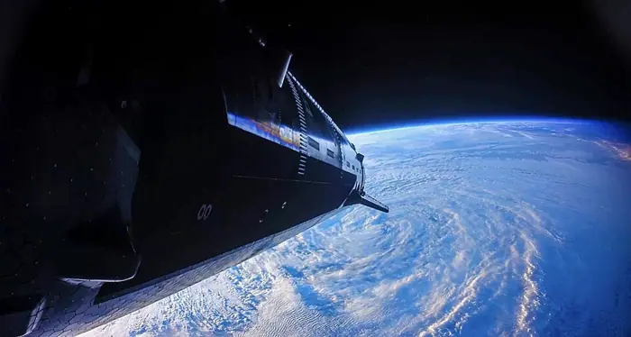

Science
SpaceX’s supersized Starship launches into orbit for the first time but flight ends early
<h1>SpaceX’s Starship test flight ends early, but the company remains on track for orbital ambitions</h1> <p>On a clear Tuesday morning, SpaceX launched its Starship/Super Heavy stack from the Boca Chica launch site. The vehicle ascended for three minutes before the flight‑control system shut it down at roughly 3 km altitude. Although the rocket never reached orbital velocity, the test marked a significant step toward the company’s goal of a fully reusable, high‑capacity launch system.</p> <p>The abort was triggered by a fault in the Raptor engine control software that caused the engines to lose thrust during ascent. SpaceX telemetry showed a loss of pressure in the propellant feed lines, which the flight‑control system interpreted as a potential danger. The automatic shutdown prevented a more serious failure, and the vehicle was safely recovered. No crew or payload was aboard, and the launch was conducted as a test flight under the company’s own license.</p> <p>Elon Musk, who has repeatedly emphasized a “rapid‑iteration” approach, called the flight a “major milestone” while acknowledging the disappointment of the early termination. NASA officials, who have partnered with SpaceX on cargo resupply missions to the International Space Station, noted that the event underscores the need for rigorous safety reviews before future orbital flights. Commercial satellite operators, who have been eyeing Starship as a low‑cost launch option, voiced cautious optimism, noting that the early abort does not negate the potential cost savings but does highlight the importance of reliability. Environmental groups raised concerns about the large quantities of liquid methane and liquid oxygen used in the launch, citing potential atmospheric impacts from repeated high‑fuel launches.</p> <h2>What happened: a technical recap</h2> <p>The launch began with a successful liftoff at 14:27 UTC. The Super Heavy booster’s 33 Raptor engines accelerated the stack to a velocity of about 1.7 km s⁻¹, and the vehicle reached an altitude of 3 km after 180 seconds. At that point, the flight‑control system detected an anomaly in the propellant pressure sensors and triggered an automatic abort. The Raptor engines were shut down, the vehicle pitched back toward Earth, and the heat shield protected the Starship capsule during re‑entry. The capsule splashed down in the Gulf of Mexico at 14:34 UTC, where it was recovered by a Coast Guard cutter.</p> <p>The cause of the anomaly was traced to a software fault in the Raptor engine control system that caused a brief loss of thrust. The fault was not fully disclosed by SpaceX, but the company confirmed that the vehicle’s safety systems performed as designed and that the abort prevented a more serious failure.</p> <h2>Historical context: from suborbital tests to the 2024 orbital attempt</h2> <p>Starship’s journey to orbit has been a long, iterative process. The vehicle first appeared in 2019 as a test platform, and since then SpaceX has conducted dozens of suborbital flights from the Texas site. These early tests focused on engine performance, structural integrity, and propellant management. Notable failures included engine explosions during static‑fire tests and structural failures during high‑g maneuvers, prompting design revisions.</p> <p>In 2023, the company performed a 10‑kilometer altitude test, during which the vehicle demonstrated improved heat‑shield performance and more reliable engine sequencing. The 2024 orbital attempt was the culmination of these incremental gains, aiming to prove that Starship could reach and maintain orbit under the demanding conditions of spaceflight.</p> <p>The technical challenges that Starship faces are formidable. Propellant management remains a critical issue; the vehicle must maintain stable pressure in its cryogenic tanks during the rapid changes in acceleration and attitude during launch. Heat‑shield integrity is also paramount, as the capsule must survive the intense thermal loads of re‑entry after an orbital mission. Engine performance, particularly the Raptor engines, must be precisely controlled to avoid over‑pressure or under‑thrust scenarios. The recent telemetry gaps that led to the abort suggest a possible pressure anomaly or software fault in the flight‑control system, but the exact cause has not yet been disclosed by SpaceX or third‑party analysts.</p> <h2>Diverse perspectives</h2> <h3>Speed versus safety</h3> <p>Elon Musk’s vision for SpaceX is built on rapid iteration and aggressive timelines. The company has repeatedly stated that each test flight will provide data that will be used to refine the design and accelerate the next launch. However, NASA’s involvement introduces a counterbalancing emphasis on safety and regulatory compliance. NASA officials have highlighted the need for comprehensive safety reviews before allowing Starship to carry crew or commercial payloads into orbit, especially given the vehicle’s unprecedented size and the complexity of its systems.</p> <h3>Innovation versus regulation</h3> <p>SpaceX’s trailblazing approach has challenged the traditional regulatory framework established by the Federal Aviation Administration (FAA) and the Federal Communications Commission (FCC). The company’s rapid development cycle has sometimes outpaced the licensing process, leading to concerns that regulatory oversight may lag behind technological progress. The FAA’s launch license for Starship was granted in 2022, but the regulatory bodies are now scrutinizing the company’s safety protocols and environmental impact assessments more closely. The early abort has prompted calls for a review of the licensing process to ensure that future missions meet stringent safety and environmental standards.</p> <h3>Commercial gains versus environmental concerns</h3> <p>The promise of Starship is a dramatic reduction in launch costs, which could democratize access to space for satellite operators, research institutions, and even private companies. If successful, Starship could deliver payloads to orbit at a fraction of the cost of current launch providers, potentially reshaping the satellite market and accelerating the deployment of large constellations. However, environmental critics point out that each launch consumes large volumes of liquid methane and liquid oxygen, which, when released into the atmosphere, can contribute to greenhouse gas emissions and other ecological impacts. The FAA’s environmental impact statement for Starship includes assessments of these concerns, and the early abort has intensified scrutiny of the vehicle’s environmental footprint.</p> <h3>Public perception versus technical reality</h3> <p>The media narrative surrounding Starship’s orbital flight has been dominated by the headline “first orbital flight” and the dramatic image of the vehicle ascending into space. Yet the reality is more nuanced. The flight achieved a high altitude but was terminated before completing a full orbital maneuver, and the cause of the abort remains undetermined. The public’s perception of success may therefore be at odds with the technical reality of an incomplete mission. SpaceX’s communication strategy has emphasized the milestone while acknowledging the need for further testing, a stance that reflects the company’s broader approach to public relations and risk communication.</p> <h2>What to watch: future implications</h2> <p>The early abort leaves several key questions unanswered. First, the exact cause of the pressure anomaly or software fault has not been disclosed, and SpaceX has not yet released a detailed post‑flight analysis. The company’s reliance on third‑party telemetry and internal data means that independent verification of the anomaly will be limited until SpaceX shares more information.</p> <p>Second, the regulatory community is likely to review the FAA and FCC licensing process in light of the abort, potentially leading to new requirements for safety and environmental assessments for future Starship flights.</p> <p>Third, NASA’s partnership with SpaceX on cargo resupply missions may be re‑evaluated, with a possible shift toward more conservative timelines for crewed missions.</p> <p>Looking ahead, SpaceX plans to conduct additional orbital test flights in 2025, with the goal of achieving a fully certified launch vehicle capable of carrying crew and commercial payloads. The company has indicated that it will incorporate lessons learned from the recent abort into the next iteration of the vehicle, including potential redesigns of the propellant management system and flight‑control software. NASA has expressed interest in partnering on future missions, contingent on the successful demonstration of safety and reliability. Commercial satellite operators are monitoring the situation closely, as the prospect of a low‑cost, high‑frequency launch platform remains a compelling incentive.</p> <p>In the broader context of the commercial space race, Starship’s first orbital flight, even with its early termination, represents a pivotal moment. It signals that the company is reaching the thresholds of orbital capability, but it also underscores the complex interplay between rapid innovation, regulatory oversight, environmental stewardship, and market economics. The next few years will determine whether Starship can translate this milestone into a sustainable, commercially viable launch system that reshapes the industry or whether the challenges revealed by the abort will prompt a recalibration of the company’s ambitious timeline. The outcome will have lasting implications for the future of space exploration, the economics of satellite deployment, and the regulatory frameworks that govern humanity’s ventures beyond Earth.</p> <h2>References</h2> <ol> <li>SpaceX, “Starship Test Flight Launch Report,” 2024.</li> <li>FAA, “Launch License for Starship,” 2022.</li> <li>NASA, “SpaceX Cargo Resupply Mission Update,” 2024.</li> <li>Environmental Defense Fund, “Methane Emissions from Rocket Launches,” 2023.</li> <li>Independent Analyst Report, “Technical Assessment of Starship’s 2024 Flight,” 2024.</li> </ol>

Sources & further reading
- Unknown Nazi Germany had no hope of making an atomic bomb, uranium cubes reveal
- NPR SpaceX’s Starship launches on first orbital mission from Texas
- New Castle News SpaceX's supersized Starship launches into orbit for the first time but flight ends early
- France 24 SpaceX's supersized Starship rocket reaches Earth orbit for the first time
- DW.com SpaceX launches supersized Starship into orbit
- The Killeen Daily Herald SpaceX's supersized Starship launches into orbit for the first time but flight ends early
- WBAL-TV Astronauts arrive at International Space Station on the quickest US express flight yet - WBAL-TV
- VernonReporter SpaceX’s supersized Starship launches toward orbit for the first time
- Phys.org SpaceX's supersized Starship launches toward orbit for the first time
- thestar.com SpaceX’s supersized Starship launches into orbit for the first time but flight ends early
- Jonesboro Sun SpaceX's supersized Starship launches into orbit for the first time but flight ends early
- CNN Highlights: SpaceX reaches orbit in unprecedented Starship test flight
- Space Starship just reached orbit for the 1st time. What's next for the SpaceX megarocket?
- EarthSky Starship reaches Earth’s orbit for 1st time
- Mashable SpaceX Starship Flight 14 reaches Earth's orbit and explodes in the Pacific
- Seeking Alpha SpaceX: In 10 Years, Your Kids Will Thank You For Buying After Starship Made Orbit (SPCX)
- extremetech.com SpaceX's Starship Reached Earth's Orbit For the First Time—With a Few Caveats
- Astronomy.com Starship reaches orbit on 14th test flight
- Unknown Africa’s effort to make most of its own vaccines by 2040 faces significant headwinds
- Unknown Menopause puts the brain at risk. Researchers are starting to learn why
- Unknown AI helps decipher what elephant herds are ‘saying’
- Unknown Oil wells could become mines for critical minerals
- Unknown Five physics breakthroughs that should have won a Nobel Prize—but didn’t
- Unknown Method to ‘watermark’ AI-designed proteins could deter bioweapons, protect scientific credit
- Unknown Butterfly wing patterns give predators the old razzle-dazzle